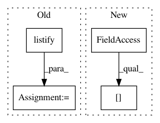

fe50dfc3e52a9d31827e10a1ee4b2aec3ff087f7,innvestigate/utils/keras/graph.py,,get_layer_neuronwise_io,#Any#Any#Any#Any#,188
Before Change
// (n, channels) dot (dimension, channels).T = (n, dimensions)
if contains_bias(layer):
layer_wo_bias = copy_layer(layer, keep_bias=False)
tmp = iutils.listify(kutils.easy_apply(layer_wo_bias, Xs))
tmp = [reshape(x) for x in tmp]
kernel = kernel.reshape((-1, n_channels))
dense = keras.layers.Dense(kernel.shape[0], use_bias=False)
After Change
if return_i:
extract_patches = ilayers.ExtractConv2DPatches(kernel.shape[:2],
kernel.shape[2],
layer.strides,
layer.dilation_rate,
layer.padding)
In pattern: SUPERPATTERN
Frequency: 3
Non-data size: 4
Instances
Project Name: albermax/innvestigate
Commit Name: fe50dfc3e52a9d31827e10a1ee4b2aec3ff087f7
Time: 2018-02-15
Author: alber.maximilian@gmail.com
File Name: innvestigate/utils/keras/graph.py
Class Name:
Method Name: get_layer_neuronwise_io
Project Name: OpenMined/PySyft
Commit Name: e4b4163942e86ec9eb4deae0254415a0c59151c2
Time: 2021-03-02
Author: koenlennartvanderveen@gmail.com
File Name: src/syft/core/plan/plan.py
Class Name: Plan
Method Name: __call__
Project Name: dpressel/mead-baseline
Commit Name: 1ea015338fd44b1f5210668ddee1e8ff2a3d6cf7
Time: 2019-07-30
Author: blester125@users.noreply.github.com
File Name: python/mead/tasks.py
Class Name: Task
Method Name: _configure_reporting